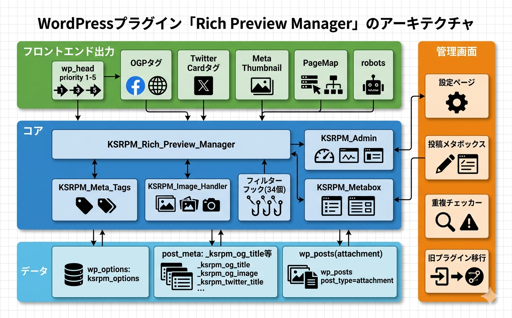

トラブルシューティング マニュアル
Kashiwazaki SEO Rich Preview Manager の使用中に発生しうる問題と対処法、重複チェッカーの使い方、アーキテクチャについて解説します。
よくある問題と対処法
OGPタグが出力されない
| 考えられる原因 | 対処法 |
|---|---|
| プラグインが有効化されていない | 管理画面の「プラグイン」一覧で、本プラグインが有効になっていることを確認してください。 |
| 出力タイプが無効になっている | 設定画面で「OGP」の出力タイプが有効になっていることを確認してください。他の出力タイプも同様です。 |
テーマが wp_head() を呼び出していない |
テーマの header.php に <?php wp_head(); ?> が記述されていることを確認してください。 |
| 対象投稿タイプに含まれていない | 設定画面の「投稿タイプ」で、該当の投稿タイプが選択されていることを確認してください。 |
| キャッシュプラグインが古い出力を表示している | キャッシュプラグインのキャッシュをクリアしてから再確認してください。 |
SNSシェア時に意図した画像が表示されない
| 考えられる原因 | 対処法 |
|---|---|
| 画像優先順位を誤解している | 画像はカスタムOGP画像 → アイキャッチ → デフォルト画像の順で選定されます。意図した画像がメタボックスで設定されているか確認してください。 |
| デフォルト画像が未設定 | 設定画面でデフォルト画像を設定してください。アイキャッチ画像がない投稿のフォールバックとして使用されます。 |
| 画像サイズが小さすぎる | OGP画像の推奨サイズは1200 x 630px以上です。小さい画像は一部のSNSで表示されない場合があります。 |
| SNS側のキャッシュが古い | Facebookは シェアデバッガー でキャッシュをクリアできます。Xは Card Validator で確認してください。 |
| 画像URLがHTTPSでない | OGP画像はHTTPS URLであることが推奨されます。サイト全体のSSL対応を確認してください。 |
メタタグが重複して出力される
| 考えられる原因 | 対処法 |
|---|---|
| 他のSEOプラグインがOGPタグを出力している | Yoast SEO、All in One SEO Pack などのOGP出力機能を無効にしてください。重複チェッカーで検出できます。 |
| テーマがOGPタグを出力している | テーマの functions.php や header.php でOGPタグの直接出力がないか確認してください。 |
| 旧プラグインが残っている | Kashiwazaki SEO OGP Manager（v1.x）が有効なまま本プラグインを使用すると重複します。旧プラグインを無効化してください。 |
旧プラグインからの移行がうまくいかない
| 考えられる原因 | 対処法 |
|---|---|
| 旧プラグインのデータが存在しない | 旧プラグイン（kashiwazaki-seo-ogp-manager）が一度も使用されていない場合、移行対象のデータがありません。 |
| 旧プラグインを先に削除してしまった | 旧プラグインを削除するとデータ（ksom_options）も削除される場合があります。バックアップからデータを復元してください。 |
| 移行後に設定が反映されない | 移行後、設定画面で各出力タイプが有効になっていることを確認してください。v2.0.0 で追加された出力タイプ（Meta Thumbnail、PageMap）は手動で有効化が必要です。 |
メタタグの出力内容を確認するには、ページのソースコード（Ctrl+U）を表示し、<head> 内の og:、twitter:、thumbnail、PageMap で検索してください。
重複メタタグ検出チェッカーの使い方
重複チェッカーは、サイトのフロントエンドHTMLを解析し、OGP/Twitter Card関連のメタタグが複数出力されていないかを検出します。
設定画面で「重複チェッカー」を有効化します。
管理画面のダッシュボードまたは設定画面に重複検出結果が表示されます。
重複が検出された場合、原因となるプラグインやテーマのOGP出力機能を無効にしてください。
対処後、再度チェッカーを実行して重複が解消されたことを確認します。
重複チェッカーはサイトの表示速度に影響を与えません。管理画面でのみ動作し、フロントエンドには一切影響しません。
動作要件
| 項目 | 要件 |
|---|---|
| WordPress | 6.0 以上 |
| PHP | 7.4 以上 |
| ライセンス | GPL-2.0+ |
| 対応ブラウザ | Chrome、Firefox、Safari、Edge（最新版） |
技術仕様
- データ保存: wp_options (ksrpm_options), post_meta (_ksrpm_*)
- カスタムテーブル: なし
- 外部通信: なし
- Cronイベント: なし
- ショートコード: なし
- フロントエンドCSS/JS: なし（headメタタグのみの出力）
- カスタムフィルター: 34種類以上
- カスタムアクション: 17種類以上
- セキュリティ: nonce検証、manage_options権限チェック、esc_attr/esc_urlサニタイズ
アーキテクチャ
Kashiwazaki SEO Rich Preview Manager は以下の6つのクラスで構成されています。

| クラス名 | 役割 |
|---|---|
| Main（Singleton） | プラグインのエントリーポイント。各クラスの初期化とフックの登録を管理 |
| KSRPM_Admin | 管理画面の設定ページ、オプション保存、重複チェッカーUI |
| KSRPM_Metabox | 投稿編集画面のメタボックス表示と post_meta の保存処理 |
| KSRPM_Rich_Preview_Manager | 5種類の出力タイプの統合管理とwp_headへの出力制御 |
| KSRPM_Meta_Tags | 各メタタグ（OGP、Twitter Card、Meta Thumbnail、PageMap、robots）の生成ロジック |
| KSRPM_Image_Handler | 画像優先順位チェーンの処理（カスタム画像→アイキャッチ→デフォルト画像） |
メタタグ出力フロー
wp_head アクションで KSRPM_Rich_Preview_Manager が呼び出されます。
KSRPM_Image_Handler が画像優先順位チェーン（カスタム画像 → アイキャッチ → デフォルト画像）に従って使用画像を決定します。
投稿別メタボックス設定（_ksrpm_* post_meta）を確認し、設定がある場合はその値を使用します。
KSRPM_Meta_Tags が有効な出力タイプごとにメタタグを生成します。
34種類以上のカスタムフィルターを適用し、最終的な値を決定します。
サニタイズされたメタタグ（OGP、Twitter Card、Meta Thumbnail、PageMap、robots）を <head> 内に出力します。
カスタムテーブルやCronイベントは使用しないため、プラグインの削除時に wp_options の ksrpm_options と post_meta の _ksrpm_* のみが削除対象です。